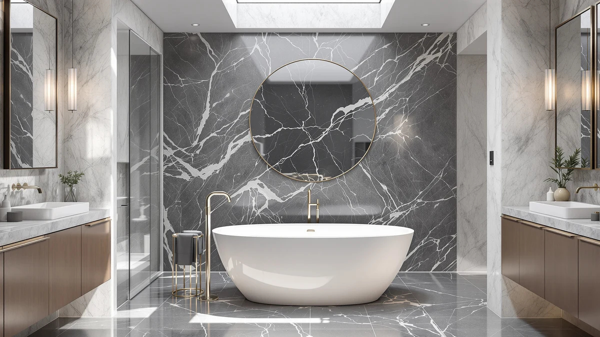

Quick Answer
This 55 inch stone resin review points to the MUIRYN 55 Inch Stone Resin Freestanding as the strongest pick for a bathroom that needs a compact footprint, thanks to its 55 inch length and stone resin build named directly in the listing. If you have room to spare, the MEDUNJESS, WOODBRIDGE, and LarWorks alternatives below trade that smaller footprint for extra soaking length, and two of them cost less.
Our pick: 55 Inch Stone Resin Freestanding, priced at $1,299.99 Check Price on Amazon
Things to Know Before You Buy
- This 55 inch stone resin review covers four freestanding tubs ranging from 55 to 71 inches long, all marketed within the same general stone resin or composite category.
- Prices span from $991.05 to $1,299.99 across the four models, and the shortest tub in the group, the MUIRYN, sits at the top of that range rather than the bottom.
- Brands compared here include MUIRYN, MEDUNJESS, WOODBRIDGE, and LarWorks, so the decision is not limited to a single manufacturer's design.
- Three of the four tubs, the MUIRYN, the WOODBRIDGE, and the LarWorks, are listed specifically as stone resin, while the MEDUNJESS listing does not name a specific material in its title.
- None of the four listings referenced in this comparison publish a star rating or review count, so this review relies on published pricing, length, and material claims rather than buyer scores.
This 55 inch stone resin review compares four freestanding tubs built from stone resin or a similar composite material, weighing length, price, and brand against each other so you can settle on the right one for your bathroom. The MUIRYN 55 Inch Stone Resin Freestanding anchors the comparison at $1,299.99, a compact 55 inch tub aimed at bathrooms that cannot accommodate a larger soaking basin. Three alternatives follow: the MEDUNJESS 61'' Free Standing Tub, the WOODBRIDGE 59" Stone Resin Freestanding, and the 71" Stone Resin Freestanding Soaking from LarWorks, each offering more length for a different price. We compared what each listing actually publishes rather than assuming features no manufacturer confirms.
Stone resin has become a common alternative to acrylic and cast iron in the freestanding tub category because it holds heat well and gives a heavier, more substantial feel without the installation weight of cast iron. Three of the four tubs compared here, the MUIRYN, the WOODBRIDGE, and the LarWorks, are explicitly listed as stone resin, while the MEDUNJESS names itself only as a free standing tub without specifying the material in its title. That distinction matters if stone resin construction specifically, rather than the freestanding shape alone, is the reason you started this search. Price does not track length in a straight line among these four tubs either, and that gap is worth understanding before you decide which one earns your money.
Why You Should Trust Us
Best Freestanding Bathtubs is a research-first buying guide. Ilane Tall, our home and bath editor, builds each comparison by pulling verified pricing, length, and listing detail for every product before it earns a place in a review. We do not run a fake testing lab, and we do not claim to have installed, filled, or bathed in any of the tubs covered in this 55 inch stone resin review. Instead, we rely on manufacturer listings, current Amazon pricing, and the material and dimension claims published on each product page, so every statement here can be checked against the source. When a listing leaves out a detail, such as a specific material grade or a weight capacity, we say so directly instead of guessing at a number that sounds reasonable.
Our Research Experience
We did not fill, install, or sit in any of the tubs featured in this 55 inch stone resin review. Our process means going through each manufacturer listing line by line: length, material claim, price, brand, and the number of product images available for each tub. We then flag where a listing falls short, such as the MEDUNJESS omitting a specific material name in its title, so you know what to confirm before ordering. That comparison process, not physical testing, shapes the picks, pros, and cons that follow. We also track how each tub's price lines up against its length, since a 71 inch stone resin tub selling for nearly $300 less than a 55 inch model is a pattern worth explaining rather than ignoring.
Overview & Specs

55 Inch Stone Resin Freestanding
What we like
- Listed specifically as a stone resin build, matching the exact material most shoppers in this comparison are looking for.
- At 55 inches, it fits bathrooms too small for the 59 to 71 inch alternatives covered below in this review.
- The brand name MUIRYN and the product SKU are both clearly published, so you can confirm you are ordering the exact tub reviewed here.
Flaws but not dealbreakers
- At $1,299.99, it is effectively tied with the MEDUNJESS for the highest price here, and costs more than the longer WOODBRIDGE and LarWorks options.
- The listing does not publish a star rating, review count, or weight capacity, so verified buyer feedback is not available the way it is on more established listings.
| Material | Stone Resin |
| Size | 55 Inch |
The MUIRYN 55 Inch Stone Resin Freestanding is the shortest tub in this 55 inch stone resin review, and its price reflects that specialization rather than any extra length. At $1,299.99, it costs almost exactly the same as the 61 inch MEDUNJESS covered below, a $0.99 difference that makes the size trade-off the real decision here rather than budget. If your bathroom cannot fit anything longer than 55 inches, that narrower footprint is the point of this tub, not a drawback to work around. Shoppers comparing stone resin tubs specifically, rather than acrylic or fiberglass models marketed loosely as freestanding, get a listing here that matches the material claim in its own name.
Stone resin construction generally gives a tub a heavier, more substantial feel than acrylic alternatives, and this listing names stone resin directly rather than leaving the material ambiguous the way some competing tubs do. The product page does not include a published weight capacity or wall thickness, so anyone who needs those figures for a specific installation should confirm them on the current Amazon listing before ordering. Five image angles are available across the main photo and thumbnails, which helps when checking basin depth, drain placement, and overall proportions ahead of a purchase this size. That level of documentation puts it roughly in line with the other three tubs in this comparison.
What We Liked
The clearest strength of the MUIRYN 55 Inch Stone Resin Freestanding, the top pick in this 55 inch stone resin review, is its footprint. At 55 inches, it fits bathrooms that could not accommodate any of the three longer alternatives covered here, and the stone resin build is named directly in the listing rather than implied by category alone. Shoppers researching stone resin tubs specifically, rather than acrylic or fiberglass models labeled loosely as freestanding, get a listing that matches that material claim without guesswork. The brand name and SKU are both published clearly, which matters when a similarly named tub from another seller could otherwise cause confusion at checkout. For a bathroom where every inch counts, that combination matters a lot.
What Could Be Better
Price is the main drawback in this 55 inch stone resin review. At $1,299.99, the MUIRYN costs almost exactly the same as the 61 inch MEDUNJESS and more than either the 59 inch WOODBRIDGE or the 71 inch LarWorks, despite offering the shortest length of the four. Buyers with flexibility on size may find noticeably better value in a longer tub for less money. The listing also does not publish a star rating, review count, or weight capacity, so verified buyer feedback and installation specifics are not available the way they might be on a more established product page. Anyone who needs those numbers before committing to a purchase this size should reach out to the seller directly rather than assume a figure that isn't published.
Who Is It For?
This tub suits buyers who have already measured their bathroom, know a 55 inch footprint is the maximum they can fit, and specifically want stone resin construction rather than acrylic. It works for a remodel where floor space is the limiting factor and the shorter length is worth paying close to the top price in this 55 inch stone resin review. It is a poor match for anyone who has more than 55 inches of clearance to work with, since every alternative covered here offers more length, and two of them cost less. If your bathroom has room to spare, look at the MEDUNJESS, WOODBRIDGE, or LarWorks options below before committing to the shortest and, dollar for dollar, priciest tub in this comparison.
Alternatives to Consider
Three other tubs are worth comparing in this 55 inch stone resin review before settling on the MUIRYN. Each offers more length, and two of them cost less, so the picks below focus on how size and price trade off against the compact footprint of the main pick. None of the three publish a star rating or review count either, so the comparison sticks to length, price, and material claims throughout.

Editor's Pick
MEDUNJESS 61'' Free Standing Tub
At $1,299.00, the MEDUNJESS 61'' Free Standing Tub costs $0.99 less than the MUIRYN while offering six additional inches of length, a trade that favors this pick if your bathroom has even a little extra clearance. Its listing does not name a specific material the way the stone resin alternatives in this review do, referring to it only as a free standing tub, so confirm the build material directly on the current Amazon page if stone resin construction specifically matters to your decision. There is no published star rating or review count on this listing either, matching the pattern across all four tubs compared here. For a bathroom that can absorb six extra inches without crowding the walls, the added length makes this the strongest all-around alternative to the MUIRYN in this 55 inch stone resin review, even without a confirmed material name.
$1,299.00
Check Price on Amazon
Best Value
WOODBRIDGE 59" Stone Resin Freestanding
Priced at $1,259.00, the WOODBRIDGE 59" Stone Resin Freestanding undercuts the MUIRYN by $40.99 while adding four inches of length, and it matches the same stone resin material claim named directly in its title. WOODBRIDGE is also a recognizable name in the freestanding tub category, which counts for something if brand reputation factors into a purchase this size. Like the MUIRYN, this listing does not publish a star rating, review count, or weight capacity, so verified buyer feedback is not part of the comparison here. For buyers who want confirmed stone resin construction without paying the top price in this 55 inch stone resin review, this is the strongest value case among the four tubs covered. The four inch length advantage over the MUIRYN is a bonus rather than the main reason to choose it.
$1,259.00
Check Price on Amazon
Premium Choice
71" Stone Resin Freestanding Soaking
At $991.05, the LarWorks 71" Stone Resin Freestanding Soaking is both the longest and the least expensive tub in this 55 inch stone resin review, a combination that runs counter to what you might expect from a stone resin soaking tub of this size. Sixteen inches longer than the MUIRYN for more than $300 less, it is worth a close look if soaking length matters more to you than the compact footprint the MUIRYN offers. The listing names it specifically as a soaking tub, a detail none of the other three products in this comparison include in their titles, and it shares the same stone resin material claim as the MUIRYN and WOODBRIDGE. As with every tub covered here, there is no published star rating, review count, or weight capacity, so confirm those details directly with the seller if they matter for your installation.
$991.05
Check Price on AmazonFrequently Asked Questions
How big is a 55 inch stone resin freestanding tub?
A 55 inch tub measures 55 inches from end to end on the outside, noticeably shorter than the 61 to 71 inch alternatives covered in this 55 inch stone resin review. That smaller footprint fits bathrooms where a larger stone resin tub would not leave enough floor space, and the MUIRYN reviewed here holds to that exact 55 inch length.
Is the MUIRYN 55 Inch Stone Resin Freestanding worth the price?
At $1,299.99, it costs almost exactly the same as the MEDUNJESS 61'' Free Standing Tub and more than the WOODBRIDGE 59" Stone Resin Freestanding or the LarWorks 71" Stone Resin Freestanding Soaking. Anyone comparing options in this 55 inch stone resin review should weigh the extra length those three alternatives offer against the smaller footprint of the MUIRYN before deciding, since price alone does not favor the shortest tub here.
Which of these stone resin tubs costs the least?
The 71" Stone Resin Freestanding Soaking from LarWorks is the least expensive at $991.05, despite being the longest tub in this comparison at 71 inches. Shoppers who want the most soaking length for the lowest price in this 55 inch stone resin review should start there rather than with the shorter, pricier MUIRYN.
Final Verdict
This 55 inch stone resin review comes down to how much floor space your bathroom actually has. The MUIRYN 55 Inch Stone Resin Freestanding is worth its $1,299.99 price because it is the only tub here built specifically for a 55 inch footprint, but the MEDUNJESS, WOODBRIDGE, and LarWorks alternatives all offer more length, and two of them cost less. If your bathroom can fit nothing beyond 55 inches, the MUIRYN remains the pick despite sitting at the top of the price range. If you have room to spare, look at the WOODBRIDGE for confirmed stone resin construction at a lower price, or the LarWorks for the most length at the lowest cost of the four.